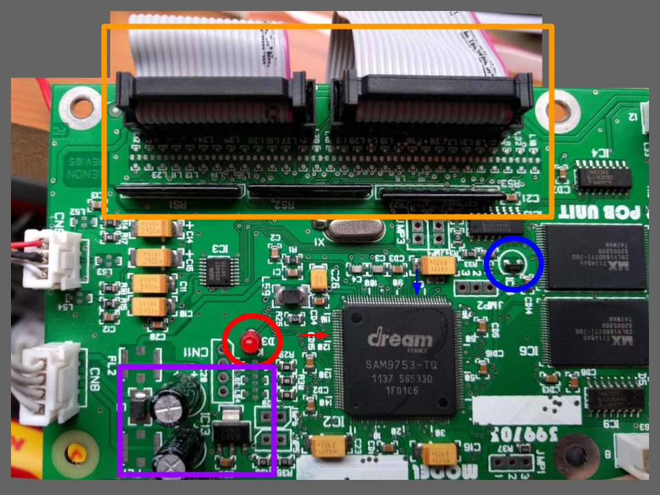
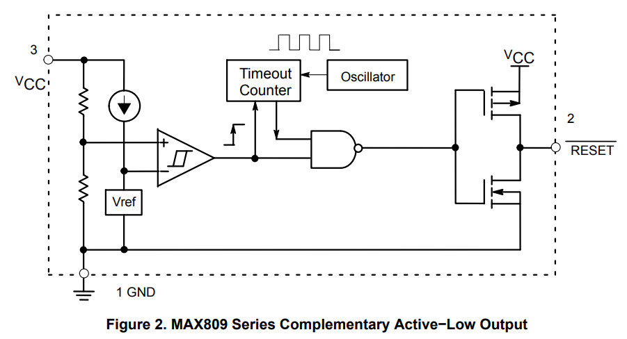
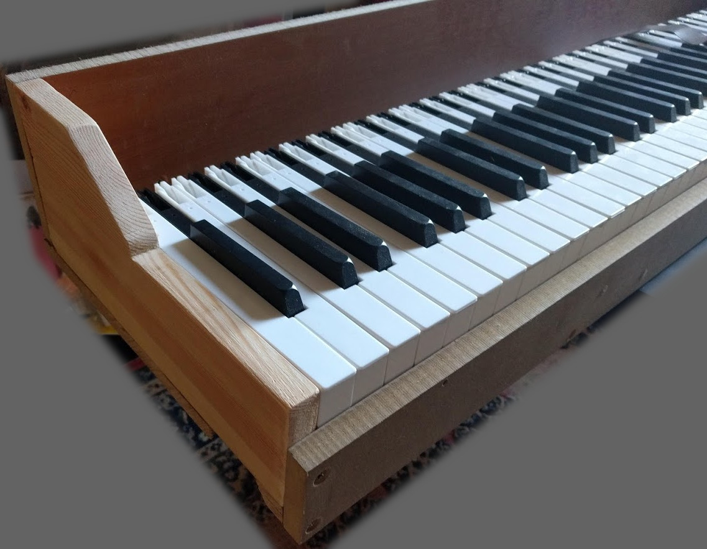
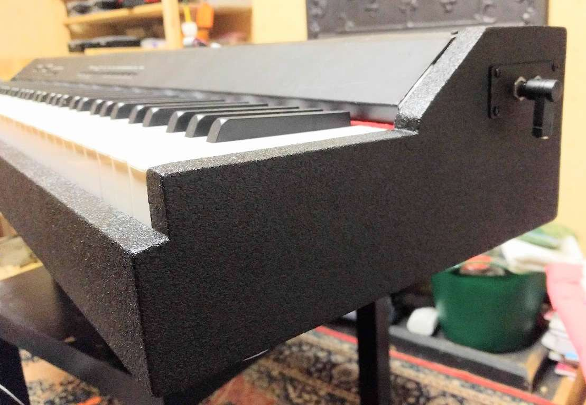

blog.jamesbaber.co.uk
Repair of a Classenti CDP1 digital piano.
When is a power button not a power button? When you forget the punchline.
Acquisition
The piano was discarded by the previous owner after it developed a fault. The reported issue was that the piano simply wouldn't turn on, which is surprisingly accurate, as we will see later. It appears I wasn't the first person to poke around inside as someone else took out most of the screws probably tested the fuse and a few voltages. Luckily, they left the screws and brackets in a resealable bag... it feels like Christmas! When switched on, the front panel LEDs show no activity (apart from the occasional initial flicker) and no sound is produced.The product seems to have been previously sold in the UK by UKPianos. The only manual I could find online was the similar but slightly more advanced Classenti CDP2. After sending an email to the aforementioned distributor, I got a friendly reply and a copy of the correct manual. These pianos are occasionally available on eBay, with the most recent prices being in the region of £200 - £300. I'm lead to believe the original price was double this, but have no source to confirm this rumour.
UKPianos claim that this 88 key weighted key electric/digital piano "will take you up to grade 7". I'm not sure if grade zero is a recognised level, but it's all I've got. The only other noteworthy information is the 36 cm depth of the body and the 45 kg weight (more on this later).
Reverse Engineering
Firstly, the keyboard chassis and circuit boards were removed from the case to make it easier to work on. A sprinkling of cable ties reduces the chances of things moving around and shorting out. (And make for better photos...)
Looking at the amplifier and power supply PCB first:
The voltage rating for the (missing) external power brick isn't stated on the piano although it does warn about mains voltage inside... Rather odd seeing as there's no direct mains input but instead a DC barrel jack. It's safe to assume that the supply voltage will be somewhere between 12 V & 24 V. It was later discovered (when I received the correct manual) that 16 V is the correct input. Through testing, it was confirmed that this PCB is correctly supplying power to the separate processor PCB. Shame. This would have been a nice simple board to reverse engineer and repair.
This PCB contains the audio, MIDI, power and pedal connectors. Along with the internal portion of the power supply and power amplifier. The power supply appears to be a basic linear regulator with a chunky electrolytic capacitor for the audio amp and built-in speakers.

The (highly integrated and self-protecting) audio amplifier is a STA540SA.
From the datasheet, we can see that the recommended input voltage for driving stereo 8 Ω speakers is 16 V.
Now moving on to the main processor PCB:
The most important part of this board is the Atmel SAM9753 instrument processor. It gives almost everything needed to build an electronic instrument - on a single chip! There are also multiple EEPROM ICs, a serially interfaced DAC (AK4384) and I/O interfaces for the peripheral pedals and MIDI devices. I cannot overstate how lucky I was that the SAM9753 IC isn't faulty... Spoilers!
With the correct input voltage established, the next step is to check the local regulator. No problems here, although I did replace the electrolytic capacitors as a precaution. The annotated image below shows the key areas to focus on. The orange zone is the keyboard matrix interface. These ribbon cables and IDC connectors lead to the keyboard chassis. The purple zone is the sub-power supply that generates the 5 V rail for this processor PCB.
While digging through the SAM datasheet, I noticed the "run" output (pin 118), which could be worth inspecting. The datasheet says that the state of this pin "indicates that the DSP is up and running [and] can be used as an external DAC reset". Or in this case, it can be used to drive a red LED (circled in... yeah... red). The LED isn't on, but this is hardly surprising seeing as the rest of the system isn't working.
Knowing that the IC is being supplied power but is not running, it is a good idea to check the reset input (pin 83). Progress! This signal line is at about 0 V (low) and the datasheet states that this pin is "active low", meaning that the IC is kept in a reset (off) state when this pin is at 0 V.

I followed this trace expecting to find an RC network (effectively a pull-up resistor with bonus capacitor for stability) but was greeted with a SOT-23 package (circled in blue) connected between reset, 5 V and GND. Circled in blue, the device in question is a reset supervisor (or voltage supervisor). The marking AAAA hints towards a MAX809 device.
Repair
Firstly, the voltage supervisor was tested in circuit. The blue scope trace is the input voltage, which was ramped up slowly using my (adjustable) bench power supply. The yellow trace is the output reset signal. The job of a voltage supervisor is to only allow the processor under control to operate when a safe voltage supply is present, and after a specified delay time has elapsed. This ensures all power supply capacitors are charged and maybe even give peripherals time to initialise. The following signal trace contradicts the previous reading of 0 V, but is far from stable, so the investigation continues.Next, the reset supervisor was desoldered and tested out of circuit. Its behaviour seems to have changed again but still isn't correct. I only managed to conduct this test twice before it stopped working entirely (output at 0 V). Whoops.
A readily available replacement was chosen to be the MAX809SLTRG.

It's an interesting failure mode and I'm not sure if it was caused by a manufacturing defect or transient voltage spike. There don't seem to be any ESD protection diodes on the power rails of this board, so it's a possibility.
At this point, I took a small risk and connected the SAM9753 reset input to Vcc (bypassing the supervisor). As long as the processor doesn't write to it's EEPROM as it initially powers on, there is little risk of damage or corruption. In this state, the piano powered up fully with a success rate of about 30%. This goes to show that the brownout detector and Schmitt trigger on the reset pin of modern microcontrollers should not be taken for granted. The MAX809SLRTG datasheet states a trigger threshold of 4.63 V which should do the job. The replacement was purchased from RS (stock number: 688-8796) for £1.06 in a pack of two. It's like they know I'll break one... Once the part was installed and the PCB cleaned, the piano began to consistently power on and operate as expected.
Lucky it has a demo button...
Case Rebuild
The original casing was partly damaged and the large base with integrated speaker cabinet is rather bulky. I didn't really need an upright piano so decided to convert it to a portable desktop form factor. A new enclosure was constructed using mostly reused MDF from the original case.
Blue Aran TuffCab speaker cabinet paint was used to give it a hard-wearing finish. This is especially important as I certainly don't intend to leave it set up all the time so constant handling is unavoidable. The paint was applied using the recommended honeycomb roller to leave a light textured finish. This was much easier than creating a streak-free gloss finish and had the side effect of hiding the imperfections in the woodwork.
...Not that there were any imperfections...
A connector mounting plate was manufactured for both ends, made of raw copper-clad circuit board material (FR4) as this offered a solid finish, was easy to work with and best of all... was what I had laying around. The right plate holds the dual headphone jack connectors (6.35 mm).

The left connector plate holds the DC barrel socket for the replacement power supply and the external pedal connector. The only pedal function I incorporated into the new case is sustain. While there is no single universal multi-way pedal connector, most cheap single keyboard pedals have a simple 6.35 mm jack.

Testing and Conclusion
One year later and it's still going strong. While I don't have much of a use for it myself, it's certainly a nice feature for guests.One last photo?